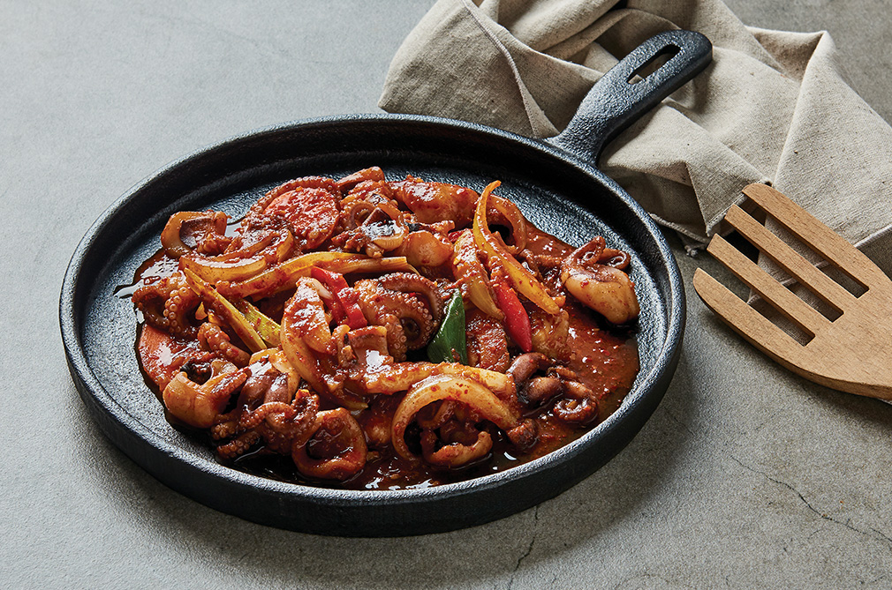
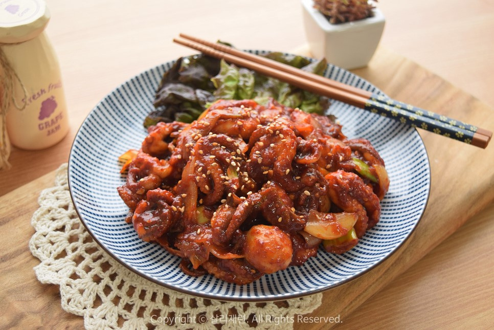
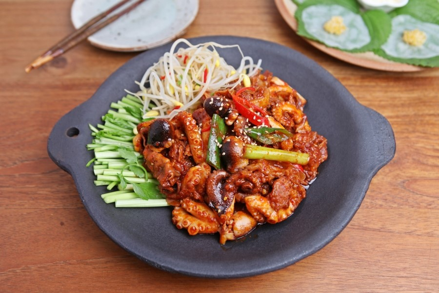
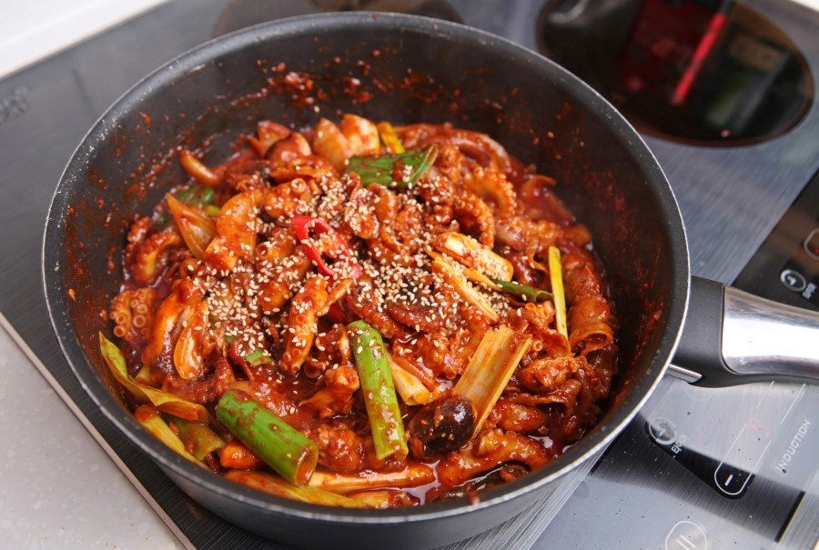

- 
- 
- 
- 


※ 오늘의 추천 요리(쭈꾸미 볶음) ※
1. 먼저 주꾸미부터 손질해보도록 해요!
2. 우선 주꾸미 머리를 과감하게 뒤집어 오른쪽 사진에서 보이는 내장을 제거해줍니다.
(머리를 뒤집었을 때, 하얗고 동그란 내용물이 보인다면 그건 주꾸미의 알이니 요리에 넣어드시면
돼요. 알은 흐르는 물에 살짝 헹궈내기만 하면 돼요.)
3. 내장 제거가 완료됐다면 주꾸미의 이빨도 제거해주세요.
머리통 쪽을 쭉 밀어주면 이빨이 슉 ~ 나와요.
4. 내장과 입을 다 제거했다면, 밀가루를 적당량 넣고 손빨래하듯이 바락바락 주물러줍니다.
불순물이 다 빠져나온 것 같다 싶으시면 이제 흐르는 물에 주꾸미를 깨끗이 헹궈준 뒤
체에 밭쳐 물기를 빼주세요.
5. 참! 야채도 손질해줘야겠죠? 양파는 가늘게 채 썰어서 준비해주시고요,
청양고추와 대파는 송송 썰어 준비합니다.
6. 양념장은 간장 1 큰 술 반, 미림 1 큰 술, 물엿 1 큰 술 반, 매실액 1 큰 술
7. 다진 마늘 반 큰 술, 고춧가루 2 큰 술, 청양 고춧가루 1 큰 술, 고추장 1 큰 술을 넣어주신 뒤
8. 후추를 톡톡톡 넣어 잘 섞어주면 주꾸미 볶음 양념장이 완성돼요.
9. 물기를 빼둔 주꾸미는 끓는 물에 살짝 데쳐준 뒤 체에 밭쳐 물기를 빼주세요.
10.팬에 기름을 조금 둘러준 뒤 야채부터 볶아줍니다. 양파와 대파를 넣고 달달 ~
11.양파가 투명해졌다 싶으면 데쳐둔 주꾸미와 양념장을 넣고 센 불에 휘리릭 볶아줍니다.
너무 오래 볶으면 질겨지니 적당히 볶아주세요 ^^
12.마지막으로 송송 썰어둔 청양고추도 샤샥 넣어준 뒤 토치로 가볍게 지져 불 맛을 좀 내줬어요
ㅋㅋㅋㅋㅋ
13.음 ~ 맛있어요! ^^